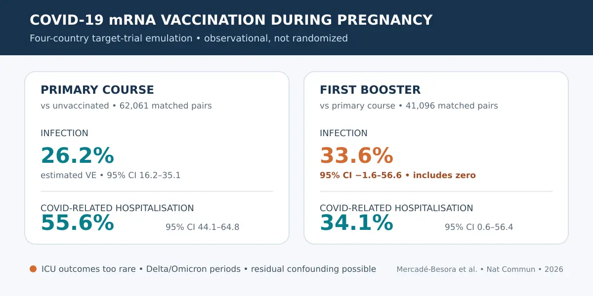

Norveç, Katalonya, İsveç ve Birleşik Krallık rutin sağlık verilerinde, gebelik sırasında ilk mRNA aşı serisine başlamak daha az enfeksiyon ve hastane yatışıyla ilişkiliydi. Ancak atama randomize değildi; tam bağışıklık etkisi beklenmeden önceki ilk 14 günde bile koruma işareti görülmesi davranışsal veya 'sağlıklı aşılanan' yanlılığına işaret ediyor. Hatırlatma dozunun enfeksiyon sonucunda güven aralığı sıfırı içeriyordu. Bulgular etkinliği destekler; nedenselliği, anne-fetüs güvenliğini ya da 2026 aşılarının etki büyüklüğünü kanıtlamaz.

Bir dakikalık özet
Núria Mercadé-Besora, Berta Raventós, Nhung T.H. Trinh ve çalışma arkadaşları, dört Avrupa ülkesinin sağlık verilerini analiz ederek sonuçlarını 16 Ekim 2026'da Nature Communications'ta yayımladı. Araştırmacılar, Pfizer veya Moderna mRNA aşılarının gebelikteki etkinliğini önceden tanımlanmış bir deney düzenine olabildiğince yaklaştırmak için 'hedef çalışma emülasyonu' kullandı. Bu yaklaşım sıradan gözlemsel analizden daha düzenlidir, fakat gerçek randomizasyon yaratmaz. [1]
İlk aşı serisi aşısız gebeliklerle karşılaştırıldığında enfeksiyon için tahmini etkinlik yüzde 26,2, COVID-19'la ilişkili yatış için yüzde 55,6 idi. İki doz alıp hatırlatma dozu olmayanlarla karşılaştırılan ilk hatırlatma dozunda tahminler sırasıyla yüzde 33,6 ve yüzde 34,1 oldu. Ancak hatırlatma dozunun enfeksiyon güven aralığı yüzde eksi 1,6 ile yüzde 56,6 arasındaydı ve etkisizliği dışlamıyordu. Bu belirsizlik sonucun temel parçasıdır. [1]
Araştırma nasıl yürütüldü?
Veri kaynakları Norveç'in ulusal kayıtları, Katalonya'daki SIDIAP, İsveç'teki SCIFI-PEARL ve Birleşik Krallık'taki CPRD GOLD idi. Gebelik haftası 34'ün altında olan 12–55 yaşındaki kişiler değerlendirilebildi. Araştırmacılar her hafta bir aşılı gebeliği; anne yaşı, gebelik haftası, takvim haftası ve eğilim skoru açısından benzer bir kontrolle eşleştirdi. Sonuçlar aşıdan 15 gün sonra izlenmeye başladı. İlk seri analizinde 62.061, hatırlatma dozunda 41.096 aşılı gebelik vardı; her biri aynı sayıda kontrolle eşleştirildi. [1]
İki ayrı soru soruldu: ilk mRNA serisine başlamak aşısız kalmaya göre ne kadar etkiliydi ve ilk hatırlatma dozu yalnızca ilk seriyi tamamlamaya göre ne kadar ek koruma sağladı? Medyan izlem ilk karşılaştırmada yalnızca 42–55 gün, hatırlatma dozunda 73–116 gündü. Aşıların çoğu birinci veya ikinci trimesterde uygulandı; Norveç ilk seri grubu dışında yüzde 80'den fazlası Pfizer'dı. COVID-19'la ilişkili yatış, kabulden 21 gün önce ile 3 gün sonrasındaki bir COVID kaydını gerektiriyor ve doğuma çok yakın yatışları dışlıyordu. [1]
Başlıca sayılar ne anlatıyor?
İlk seri için toplu analizde 54.266 aşılı kişide 2.121, kontrollerde 2.856 enfeksiyon görüldü. Tahmini etkinlik yüzde 26,2; yüzde 95 güven aralığı yüzde 16,2–35,1 idi. Hastane yatışında 103 olaya karşı 242 olay kaydedildi; etkinlik yüzde 55,6 ve güven aralığı yüzde 44,1–64,8 olarak hesaplandı. Bu iki tahminde ülkeler arası heterojenlik düşüktü. [1]
Hatırlatma dozu analizinde 32.088 eşleştirilmiş çift arasında aşılananlarda 2.243, kontrollerde 3.557 enfeksiyon vardı. Toplu tehlike oranı 0,66 olsa da güven aralığı 0,43–1,02 idi ve 1'i içeriyordu; ülkeler arası heterojenlik de çok yüksekti. Yatış için 95'e karşı 154 olay görüldü; etkinlik yüzde 34,1, güven aralığı yüzde 0,6–56,4'tü. Bu, olası faydayla uyumlu fakat oldukça belirsiz bir tahmindir. Yoğun bakım yatışları değerlendirilemeyecek kadar azdı. [1]
Yatış tanımı neden önemli?
Gebelikte hastaneye kabul her zaman ağır COVID-19 nedeniyle gerçekleşmez; pozitif test tesadüfi olabilir ve asıl neden doğum veya başka bir sorun olabilir. Araştırmacılar bu yanlış sınıflamayı azaltmak için doğuma yakın yatışları dışladı. Buna rağmen duyarlılık analizinde bu yatışlar yeniden eklendiğinde ilk serinin yatış etkinliği yüzde 55,6'dan yüzde 28,2'ye, hatırlatma dozununki yüzde 34,1'den yüzde 19,5'e düştü. [1]
Bu değişiklik bulguyu tamamen tersine çevirmiyor, fakat etki büyüklüğünün sonuç tanımına duyarlı olduğunu gösteriyor. Sağkalım eğrileri de korumanın zaman içinde azalabileceğine işaret etti. Veriler esas olarak Delta ve Omikron dolaşımı ile o dönemin aşılarını kapsıyor. Bu nedenle yüzde 55,6 sayısı 2026'nın güncellenmiş formüllerine, güncel varyantlara veya başka bir ülkeye doğrudan taşınamaz.
Sınırlılıklar ve kanıt düzeyi
En önemli sınırlılık gözlemsel tasarımdır. Yaş, gebelik haftası ve bazı hastalıklar için eşleştirme yapıldı; ancak sağlık hizmeti arama davranışı, teste erişim, kayda geçmemiş önceki enfeksiyonlar ve zamanla değişen etkenler kalmış olabilir. Bağışıklık etkisinin tam oluşması beklenmeyen ilk 14 günde bile koruma görülmesi, yazarların da belirttiği davranışsal veya 'sağlıklı aşılanan' yanlılığıyla uyumludur. Negatif test verisi olmadığı için test-negatif tasarım kullanılamadı; kontrol grubu aşı olduğunda izlemden çıkarıldı. [1]
Kısa izlem, ülkeler arasındaki salgın dalgası ve aşı takvimi farklılıkları, kontrollerin daha sonra aşılanması ve ilk seri karşılaştırmasının ikinci doz zamanlamasına bağımlı olması yorumu zorlaştırıyor. Daha da önemlisi çalışma gebelik, fetüs veya bebek güvenliği sonuçlarını incelemedi; etkinlik verilerinden bu sonuçların güvenliği hakkında hüküm verilemez. Etkinlik ilişkisi için kanıt düzeyi orta olarak düşünülebilir, ancak randomize bir çalışma düzeyinde değildir.
Politika bağlamı ve pratik mesaj
WHO'nun güncel pozisyon belgesi, ülkelerin yerel koşullara göre gebe ergen ve yetişkinler için rutin aşılamayı değerlendirebileceğini; her gebelikte tercihen ikinci trimesterde tek doz düşünülebileceğini belirtiyor. Ulusal öneriler farklı olabilir. Bu politika daha geniş bir kanıt bütününe dayanır ve bu tek araştırmanın sonucu değildir. [2]
Araştırma kişisel olarak hangi aşının ne zaman yapılacağını belirlemez. Dengeli mesaj şudur: dört sağlık sisteminde mRNA aşısı daha az enfeksiyon ve yatışla ilişkiliydi, fakat özellikle hatırlatma dozunun fayda büyüklüğü kesin değildir. Bireysel karar; ülkenin güncel rehberi, gebelik dönemi, önceki aşı ve enfeksiyonlar, eşlik eden hastalıklar ile hekim veya ebenin değerlendirmesi ışığında verilmelidir. Bu yazı kişisel tıbbi öneri değildir.
Birincil kaynaklar
Hakem değerlendirmesinden geçmiş 10 sayfalık kabul edilmiş tam metin; yöntemler, sonuç tabloları, duyarlılık analizleri, sınırlılıklar, finansman, çıkar çatışmaları ve açık erişim lisansı incelendi. Nature sayfası makaleyi halen 'Article in Press' olarak tanımlıyor; kayıt sürümü daha sonra bunun yerini alacak. Politik bağlam için WHO'nun gebelikte COVID-19 aşılamasına ilişkin güncel görüşü de okundu. Bu haber bağımsız uzman değerlendirmesi iddiası taşımaz.
Bu yazı genel bilgilendirme amaçlıdır; kişiye özel tanı veya tedavinin yerini tutmaz.